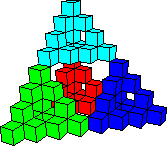
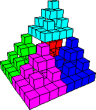

| We use Multilink Blocks to illustrate the construction of
three fractals. |
| Because only one face of each cube has an outward pointing snap,
these constructions require some care. |
| Nevertheless, the best approach may be to experiment. |
| Keeping in mind the final shape, and trying to make
the construction recursive (assemblinging stage three from three copies of stage two should be like
assembling stage two from three copies of stage one),
try to construct these models. |
| Note that because each cube has inward pointing snaps on five faces and an outward pointing
snap on one, any configuration of three, four, or five cubes snapped together must have
exactly one outward pointing snap. |
| |
| Click each picture for the corresponding instructions. |
 |
 |
 |
| Three block construction |
Four block construction |
Five block construction |
|